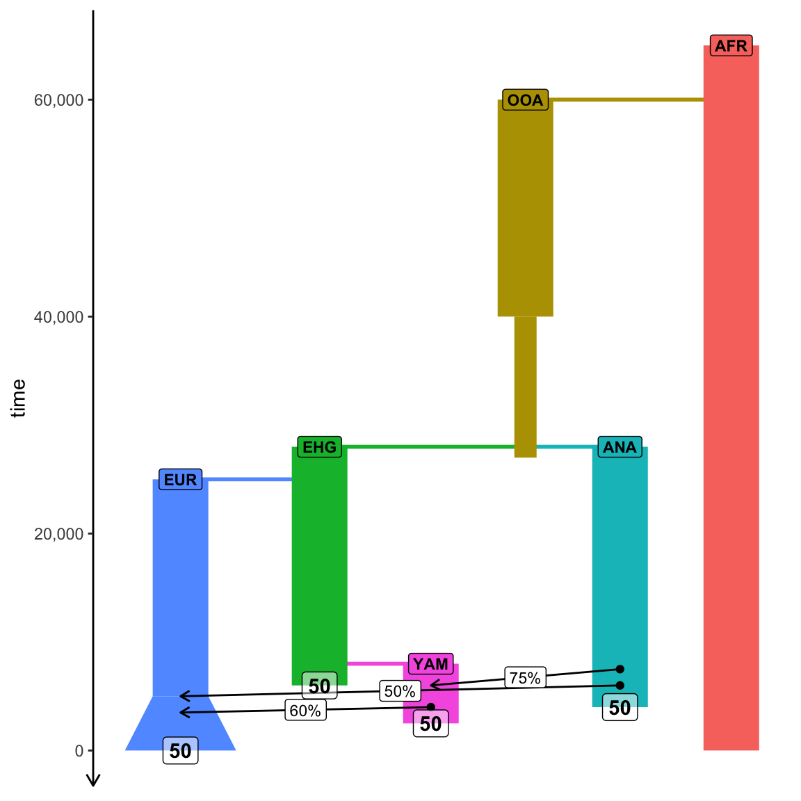
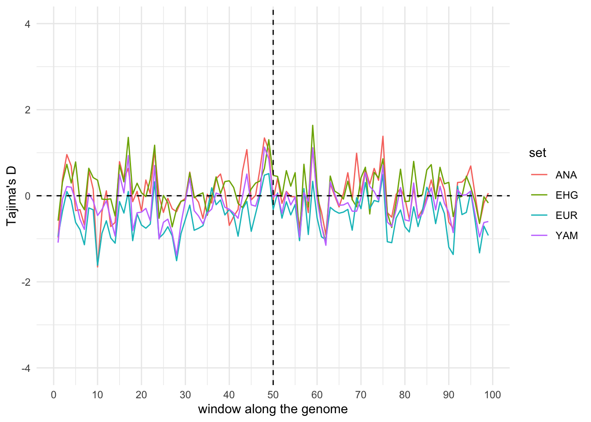
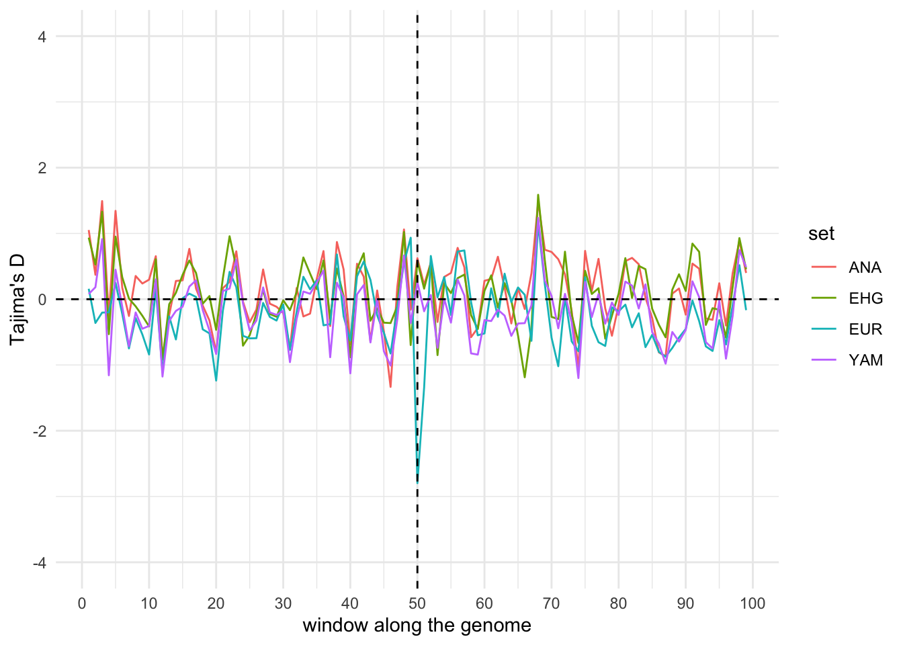

library(slendr)
init_env(quiet = TRUE)
# This line sources a script in which I provide a few useful helper functions
# which you can use in this exercise
source(here::here("utils.R"))
# African ancestral population
afr <- population("AFR", time = 65000, N = 5000)
# First migrants out of Africa
ooa <- population("OOA", parent = afr, time = 60000, N = 5000, remove = 27000) %>%
resize(N = 2000, time = 40000, how = "step")
# Eastern hunter-gatherers
ehg <- population("EHG", parent = ooa, time = 28000, N = 5000, remove = 6000)
# European population
eur <- population("EUR", parent = ehg, time = 25000, N = 5000) %>%
resize(N = 10000, how = "exponential", time = 5000, end = 0)
# Anatolian farmers
ana <- population("ANA", time = 28000, N = 5000, parent = ooa, remove = 4000)
# Yamnaya steppe population
yam <- population("YAM", time = 8000, N = 5000, parent = ehg, remove = 2500)
# Define gene-flow events
gf <- list(
gene_flow(from = ana, to = yam, rate = 0.75, start = 7500, end = 6000),
gene_flow(from = ana, to = eur, rate = 0.5, start = 6000, end = 5000),
gene_flow(from = yam, to = eur, rate = 0.6, start = 4000, end = 3500)
)
# Compile all populations into a single slendr model object
model <- compile_model(
populations = list(afr, ooa, ehg, eur, ana, yam),
gene_flow = gf, generation_time = 30
)
# Schedule the sampling from four European populations roughly before their
# disappearance (or before the end of the simulation)
schedule <- rbind(
schedule_sampling(model, times = 0, list(eur, 50)),
schedule_sampling(model, times = 6000, list(ehg, 50)),
schedule_sampling(model, times = 4000, list(ana, 50)),
schedule_sampling(model, times = 2500, list(yam, 50))
)Natural selection
The primary motivation for designing slendr was to make demographic modelling in R as trivially easy and fast as possible, focusing exclusively on neutral models. However, as slendr became popular, people have been asking for the possibility of simulating natural selection. After all, a large part of slendr’s functionality deals with population genetic models across geographical landscapes, which requires SLiM. So why not support selection simulations using slendr as well?
In December 2024 I caved in and added support for modifying slendr demographic models with bits of SLiM code, which allows simulating pretty much any arbitrary selection scenario you might be interested in.
This exercise is a quick demonstration of how this works and how you might simulate selection using slendr. We will do this using another toy model of ancient human history, which we will first use as a basis for simulating the frequency trajectory of an allele under positive selection, and then implementing a toy selection scan using Tajima’s D.
To speed things up, create a new exercise4.R script and copy the following code as a starting point for this exercise:
Next, visualize the demographic model. If you did a bit of work in human population genetics, you might recognize it as a very simplified model of demographic history of Europe over the past 50 thousand years or so. As you can see, we are recording 50 individuals from four populations – for Europeans we sample 50 individuals at “present-day”, for the remaining populations we’re recording 50 individuals just before their disappearance. Also note that there’s quite a bit of gene-flow! This was an important thing we’ve learned about human history in the past 10 years or so – everyone is mixed with pretty much everyone, there isn’t (and never was) anything as a “pure population”.
Note: We didn’t discuss it earlier, but slendr also provides the option to specify a remove = argument in a population() call which instructs the simulation engine to delete a population from a simulation at a given point. For our msprime() simulations in earlier examples it wasn’t really important, but for the slim() simulation we will be running below, we want to make a population extinct at a certain timepoint. Which is why our ancient populations in the starting script model have the remove = parameter specified.
plot_model(model, proportions = TRUE, samples = schedule)
Part 1: Simulating a tree sequence and computing Tajima’s D
Although the point of this exercise is to simulate selection, let’s first simulate a normal neutral model using slendr’s msprime() engine as a sanity check. Simulate 10 Mb of sequence with a recombination rate 1e-8 and a sampling schedule defined above. Let’s not worry about adding any mutations, just to change things up a little bit. We’ll be working with branch-based statistics here (which means adding mode = "branch" whenever we will be computing a statistic, such as Tajima’s D).
Click to see the solution
ts <- msprime(model, sequence_length = 10e6, recombination_rate = 1e-8, samples = schedule)
ts # no mutations!╔═══════════════════════════╗
║TreeSequence ║
╠═══════════════╤═══════════╣
║Trees │ 17617║
╟───────────────┼───────────╢
║Sequence Length│ 10000000║
╟───────────────┼───────────╢
║Time Units │generations║
╟───────────────┼───────────╢
║Sample Nodes │ 400║
╟───────────────┼───────────╢
║Total Size │ 3.6 MiB║
╚═══════════════╧═══════════╝
╔═══════════╤═════╤═════════╤════════════╗
║Table │Rows │Size │Has Metadata║
╠═══════════╪═════╪═════════╪════════════╣
║Edges │77862│ 2.4 MiB│ No║
╟───────────┼─────┼─────────┼────────────╢
║Individuals│ 200│ 5.5 KiB│ No║
╟───────────┼─────┼─────────┼────────────╢
║Migrations │ 0│ 8 Bytes│ No║
╟───────────┼─────┼─────────┼────────────╢
║Mutations │ 0│ 16 Bytes│ No║
╟───────────┼─────┼─────────┼────────────╢
║Nodes │22218│607.5 KiB│ No║
╟───────────┼─────┼─────────┼────────────╢
║Populations│ 6│417 Bytes│ Yes║
╟───────────┼─────┼─────────┼────────────╢
║Provenances│ 1│ 3.9 KiB│ No║
╟───────────┼─────┼─────────┼────────────╢
║Sites │ 0│ 16 Bytes│ No║
╚═══════════╧═════╧═════════╧════════════╝Inspect the table of all individuals recorded in our tree sequence using the function ts_samples(), making sure we have all the individuals scheduled for tree-sequence recording. (Again, there’s no such a thing as too many sanity checks when doing research!)
Click to see the solution
ts_samples(ts)# A tibble: 200 × 3
name time pop
<chr> <dbl> <chr>
1 EHG_1 6000 EHG
2 EHG_2 6000 EHG
3 EHG_3 6000 EHG
4 EHG_4 6000 EHG
5 EHG_5 6000 EHG
6 EHG_6 6000 EHG
7 EHG_7 6000 EHG
8 EHG_8 6000 EHG
9 EHG_9 6000 EHG
10 EHG_10 6000 EHG
# ℹ 190 more rowslibrary(dplyr)
ts_samples(ts) %>% group_by(pop, time) %>% tally# A tibble: 4 × 3
# Groups: pop [4]
pop time n
<chr> <dbl> <int>
1 ANA 4000 50
2 EHG 6000 50
3 EUR 0 50
4 YAM 2500 50As you’ve already learned in an earlier exercise, tskit functions in slendr generally operate on vectors (or lists) of individual names, like those produced by ts_names() above. Get a vector of names of individuals in every population recorded in the tree sequence, then use this to compute Tajima’s D using the slendr function ts_tajima(). (Use the same approach as you have with ts_diversity() or ts_divergence() above, using the list of names of individuals as the sample_sets = argument for ts_tajima()). Do you see any striking differences in the Tajima’s D values across populations? Check this for some general guidance.
Click to see the solution
samples <- ts_names(ts, split = "pop")
samples$ANA
[1] "ANA_1" "ANA_2" "ANA_3" "ANA_4" "ANA_5" "ANA_6" "ANA_7" "ANA_8"
[9] "ANA_9" "ANA_10" "ANA_11" "ANA_12" "ANA_13" "ANA_14" "ANA_15" "ANA_16"
[17] "ANA_17" "ANA_18" "ANA_19" "ANA_20" "ANA_21" "ANA_22" "ANA_23" "ANA_24"
[25] "ANA_25" "ANA_26" "ANA_27" "ANA_28" "ANA_29" "ANA_30" "ANA_31" "ANA_32"
[33] "ANA_33" "ANA_34" "ANA_35" "ANA_36" "ANA_37" "ANA_38" "ANA_39" "ANA_40"
[41] "ANA_41" "ANA_42" "ANA_43" "ANA_44" "ANA_45" "ANA_46" "ANA_47" "ANA_48"
[49] "ANA_49" "ANA_50"
$EHG
[1] "EHG_1" "EHG_2" "EHG_3" "EHG_4" "EHG_5" "EHG_6" "EHG_7" "EHG_8"
[9] "EHG_9" "EHG_10" "EHG_11" "EHG_12" "EHG_13" "EHG_14" "EHG_15" "EHG_16"
[17] "EHG_17" "EHG_18" "EHG_19" "EHG_20" "EHG_21" "EHG_22" "EHG_23" "EHG_24"
[25] "EHG_25" "EHG_26" "EHG_27" "EHG_28" "EHG_29" "EHG_30" "EHG_31" "EHG_32"
[33] "EHG_33" "EHG_34" "EHG_35" "EHG_36" "EHG_37" "EHG_38" "EHG_39" "EHG_40"
[41] "EHG_41" "EHG_42" "EHG_43" "EHG_44" "EHG_45" "EHG_46" "EHG_47" "EHG_48"
[49] "EHG_49" "EHG_50"
$EUR
[1] "EUR_1" "EUR_2" "EUR_3" "EUR_4" "EUR_5" "EUR_6" "EUR_7" "EUR_8"
[9] "EUR_9" "EUR_10" "EUR_11" "EUR_12" "EUR_13" "EUR_14" "EUR_15" "EUR_16"
[17] "EUR_17" "EUR_18" "EUR_19" "EUR_20" "EUR_21" "EUR_22" "EUR_23" "EUR_24"
[25] "EUR_25" "EUR_26" "EUR_27" "EUR_28" "EUR_29" "EUR_30" "EUR_31" "EUR_32"
[33] "EUR_33" "EUR_34" "EUR_35" "EUR_36" "EUR_37" "EUR_38" "EUR_39" "EUR_40"
[41] "EUR_41" "EUR_42" "EUR_43" "EUR_44" "EUR_45" "EUR_46" "EUR_47" "EUR_48"
[49] "EUR_49" "EUR_50"
$YAM
[1] "YAM_1" "YAM_2" "YAM_3" "YAM_4" "YAM_5" "YAM_6" "YAM_7" "YAM_8"
[9] "YAM_9" "YAM_10" "YAM_11" "YAM_12" "YAM_13" "YAM_14" "YAM_15" "YAM_16"
[17] "YAM_17" "YAM_18" "YAM_19" "YAM_20" "YAM_21" "YAM_22" "YAM_23" "YAM_24"
[25] "YAM_25" "YAM_26" "YAM_27" "YAM_28" "YAM_29" "YAM_30" "YAM_31" "YAM_32"
[33] "YAM_33" "YAM_34" "YAM_35" "YAM_36" "YAM_37" "YAM_38" "YAM_39" "YAM_40"
[41] "YAM_41" "YAM_42" "YAM_43" "YAM_44" "YAM_45" "YAM_46" "YAM_47" "YAM_48"
[49] "YAM_49" "YAM_50"# Compute genome-wide Tajima's D for each population -- note that we don't
# expect to see any significant differences because no population experienced
# natural selection (yet)
ts_tajima(ts, sample_sets = samples, mode = "branch")# A tibble: 4 × 2
set D
<chr> <dbl>
1 ANA 0.161
2 EHG 0.128
3 EUR -0.447
4 YAM -0.130Part 2: Computing Tajima’s D in windows
Let’s take this one step forward. Even if there is a locus under positive selection somewhere along our chromosome, it might be quite unlikely that we would find a Tajima’s D value significant enough for the entire chromosome (which is basically what we did in Part 1 now). Fortunately, thanks to the flexibility of the tskit module, the slendr function ts_tajima() has an argument windows =, which allows us to specify the coordinates of windows into which a sequence should be broken into, with Tajima’s D computed separately for each window. Perhaps this will allow us to see the impact of positive selection after we get to adding selection to our model. So let’s first built some code towards that.
Define a variable windows which will contain a vector of coordinates of 100 windows, starting at position 0, and ending at position 10e6 (i.e., the end of our chromosome). Then provide this variable as the windows = argument of ts_tajima() on a new, separate line of your script. Save the result of ts_tajima() into the variable tajima_wins, and inspect its contents in the R console.
Hint: You can use the R function seq() and its argument length.out = 100, to create the coordinates of window boundaries very easily.
Click to see the solution
# Pre-compute genomic windows for window-based computation of Tajima's D
windows <- round(seq(0, ts$sequence_length, length.out = 100))
windows [1] 0 101010 202020 303030 404040 505051 606061 707071
[9] 808081 909091 1010101 1111111 1212121 1313131 1414141 1515152
[17] 1616162 1717172 1818182 1919192 2020202 2121212 2222222 2323232
[25] 2424242 2525253 2626263 2727273 2828283 2929293 3030303 3131313
[33] 3232323 3333333 3434343 3535354 3636364 3737374 3838384 3939394
[41] 4040404 4141414 4242424 4343434 4444444 4545455 4646465 4747475
[49] 4848485 4949495 5050505 5151515 5252525 5353535 5454545 5555556
[57] 5656566 5757576 5858586 5959596 6060606 6161616 6262626 6363636
[65] 6464646 6565657 6666667 6767677 6868687 6969697 7070707 7171717
[73] 7272727 7373737 7474747 7575758 7676768 7777778 7878788 7979798
[81] 8080808 8181818 8282828 8383838 8484848 8585859 8686869 8787879
[89] 8888889 8989899 9090909 9191919 9292929 9393939 9494949 9595960
[97] 9696970 9797980 9898990 10000000# Compute genome-wide Tajima's D for each population in individual windows
tajima_wins <- ts_tajima(ts, sample_sets = samples, windows = windows, mode = "branch")
tajima_wins# A tibble: 4 × 2
set D
<chr> <named list>
1 ANA <dbl [99]>
2 EHG <dbl [99]>
3 EUR <dbl [99]>
4 YAM <dbl [99]> # You can see that the format of the result is slightly strange, with the
# `D` column containing a vector of numbers (this is done for conciseness)
tajima_wins[1, ]$D$`1`
[1] 0.3284706404 0.1232242650 0.1470449978 0.0848194968 -0.3434745914
[6] -0.5582509259 0.0217408625 -0.4225527071 0.3795666851 -0.1867460972
[11] 0.7891669774 -0.1918024838 0.0029641028 -0.6951997189 -0.3781910204
[16] 0.3786868675 -0.2805221215 0.8315450136 1.2971884114 0.6226536155
[21] 1.0397533064 -0.5068668129 0.3987138543 0.2399344078 -0.6416866841
[26] -0.6483101533 0.0660611760 0.1598160631 -0.6305074097 0.2921165967
[31] 0.4642265275 -0.7580685584 -0.4170449032 0.6122626832 0.5208875181
[36] -0.6473281850 0.6394263892 0.8115468264 -0.4226746411 -0.3135424878
[41] 0.0443905148 0.6100552050 -0.0638428391 0.3692053846 -0.0301313578
[46] -0.1873817711 0.0917870790 -0.3681305232 -0.6031845514 0.0886065355
[51] 0.4343075247 0.1660572377 0.2880219469 0.1333772795 -0.2516661988
[56] 0.4763733216 -0.6635263931 1.1739744486 0.2556154866 0.8487844643
[61] -0.8150417819 0.3624877243 0.0037729274 0.0041996820 -0.5439014372
[66] -0.0130602829 -0.0133743614 0.3192794300 1.3436469830 0.1284404766
[71] 0.5984832988 0.7882585957 0.7264763418 0.6856270219 0.3419468908
[76] 0.4126234281 -0.4164369061 0.1765006157 -0.4311855757 -0.6135220003
[81] -0.2920784531 0.4466642070 0.2860947601 -0.4071727870 -0.0470082090
[86] 0.5973082448 0.9607392014 0.6073453833 -0.4229528555 0.3914663748
[91] 0.1829485372 0.8229245487 0.2008221527 1.1255361171 -0.0793565364
[96] 0.4070639363 -0.0009906611 0.0781409760 -0.0349817827The default output format of ts_tajima() is not super user-friendly. Process the result using a helper function process_tajima(tajima_wins) that I provided for you (perhaps save it as tajima_df), and visualize it using another of my helper functions plot_tajima(tajima_df).
Note: Making the process_tajima() and plot_tajima() function available in your R code is the purpose of the source(here::here("utils.R")) command at the beginning of your script for this exercise.
Click to see the solution
# The helper function `process_tajima()` reformats the results into a normal
# data frame, this time with a new column `window` which indicates the index
# of the window that each `D` value was computed in
tajima_df <- process_tajima(tajima_wins)
tajima_df# A tibble: 396 × 3
set D window
<chr> <dbl> <int>
1 ANA 0.328 1
2 ANA 0.123 2
3 ANA 0.147 3
4 ANA 0.0848 4
5 ANA -0.343 5
6 ANA -0.558 6
7 ANA 0.0217 7
8 ANA -0.423 8
9 ANA 0.380 9
10 ANA -0.187 10
# ℹ 386 more rows# Now let's visualize the window-based Tajima's D along the simulated genome
# using another helper function `plot_tajima()`
plot_tajima(tajima_df)
It’s no surprise that we don’t see any Tajima’s D outliers in any of our windows, because we’re still working with a tree sequence produced by our a purely neutral simulation. But we have everything set up for the next part, in which we will add selection acting on a beneficial allele.
Part 3: Adding positive selection to the base demographic model
Although primarily designed for neutral demographic models, slendr allows optional simulation of natural selection by providing a “SLiM extension code snippet” with customization SLiM code as an optional argument extension = of compile_model() (a function you’re closely familiar with at this point).
Unfortunately we don’t have any space to explain SLiM here (and I have no idea, at the time of writing, whether or not you will have worked with SLiM earlier in this workshop). Suffice to say that SLiM is another very popular population genetic simulator software which allows simulation of selection, and which requires you to write custom code in a different programming language called Eidos.
Take a look at the file slim_extension.txt provided in your working directory (it’s also part of the GitHub repository here). If you worked with SLiM before, glance through the script casually and see if it makes any sense to you. If you have not worked with SLiM before, look for the strange {elements} in curly brackets in the first ten lines of the script. Those are the parameters of the selection model we will be customizing the standard neutral demographic model we started with in the next step.
Specifically, when you inspect the slim_extension.txt file, you can see that this “SLiM extension script” I provided for you has three parameters:
origin_pop– in which population should a beneficial allele appear,s– what should be the selection coefficient of the beneficial allele, andonset_time– at which time should the allele appear in theorigin_pop.
However, at the start, the SLiM extension snippet doesn’t contain any concrete values of those parameters, but only their {origin_pop}, {s}, and {onset_time} placeholders.
Use the slendr function substitute_values() to substitute concrete values for those parameters like this:
extension <- substitute_values(
template = here::here("slim_extension.txt"),
origin_pop = "EUR",
s = 0.15,
onset_time = 12000
)
extension[1] "/var/folders/h2/qs0z_44x2vn2sskqc0cct7540000gn/T//RtmpSUyt64/file15b2564ff4b46"You can see that substitute_values() returned a path to a file. Take a look at that file in your terminal – you should see each of the three {placeholder} parameters replaced with a concrete given value.
Click to see the solution
Let’s take a look at the first 15 lines of the extension file before and after calling substitute_values(). We’ll do this in R for simplicity, but you can use less in plain unix terminal.
Before – see the {{placeholder}} parameters in their original form:
// Define model constants (to be substituted) all in one place
// (each {{placeholder}} will be replaced by a value passed from R).
// Note that string constant template patterns are surrounded by "quotes"!
initialize() {
defineConstant("s", {{s}});
defineConstant("onset_time", {{onset_time}});
defineConstant("origin_pop", "{{origin_pop}}");
// compose a trajectory file based on given parameters
defineConstant("traj_file", PATH + "/" + "trajectory.tsv");
}After – see the {{placeholder}} parameters with concrete values!
// Define model constants (to be substituted) all in one place
// (each {{placeholder}} will be replaced by a value passed from R).
// Note that string constant template patterns are surrounded by "quotes"!
initialize() {
defineConstant("s", 0.15);
defineConstant("onset_time", 12000);
defineConstant("origin_pop", "EUR");
// compose a trajectory file based on given parameters
defineConstant("traj_file", PATH + "/" + "trajectory.tsv");
}And that’s all the extra work we need to turn our purely neutral demographic slendr model into a model which includes natural selection! (In this case, only a simple selection acting on a single locus, as you’ll see later, but this can be generalized to any imaginable selection scenario.)
How do we use the SLiM extension for our simulation? It’s very simple – we just have to provide the extension variable as an additional argument of good old compile_model(). This will compile a new slendr model which will now include the new functionality for simulating natural selection:
Compile a new model of the history of populations afr, ooa, ehg, etc., by following the instructions above, providing a new extension = argument to the compile_model() function.
Click to see the solution
model <- compile_model(
populations = list(afr, ooa, ehg, eur, ana, yam),
gene_flow = gf, generation_time = 30,
extension = extension # <======== this is missing in the neutral example!
)Part 4: Running a selection simulation using slim()
Now we can finally run our selection simulation!
There are two modifications to our previous simulation workflows:
- Because we need to run a non-neutral simulation, we have to switch from using the
msprime()slendr engine toslim(). The latter can still interpret the same demographic model we programmed in R, just like themsprime()engine can, but will run the model using SLiM (and thus leveraging the new SLiM extension code that we have customized usingsubstitute_values()above). We simply do this by switching from this:
ts <- msprime(model, sequence_length = 10e6, recombination_rate = 1e-8, samples = schedule)to this:
ts <- slim(model, sequence_length = 10e6, recombination_rate = 1e-8, samples = schedule)As you can see, you don’t have to modify anything in your model code, just switching from msprime to slim in the line of code which produces the simulation result.
- The customized model will not only produce a tree sequence, but will also generate a table of allele frequencies in each population (SLiM experts might have noticed the revelant SLiM code when they were inspecting
slim_extension.txt). We need to be able to load both of these files after the simulation and thus need a path to a location we can find those files. We can do this by calling theslim()function aspath <- slim(..., path = TRUE)(so with the extrapath =argument). This will return a path to where theslim()engine saved all files with our desired results.
Run a simulation from the modified model of selection with the slim() engine as instructed in points number 1. and 2. above, then use the list.files(path) function in R to take a look in the directory. Which files were produced by the simulation?
Click to see the solution (you have a working SLiM installation)
# tstart <- Sys.time()
path <- slim(model, sequence_length = 10e6, recombination_rate = 1e-8, samples = schedule, path = TRUE, random_seed = 59879916)
# tend <- Sys.time()
# tend - tstart # Time difference of 38.82014 secs
# We can verify that the path not only contains a tree-sequence file but also
# the table of allele frequencies.
list.files(path)[1] "slim.trees" "trajectory.tsv"We can see that the slim() simulation generated a tree-sequence file (just like in previous exercises focused on msprime()) but it also created a new file – this was done by the SLiM customization snippet we provided to compile_model().
Click to see the solution (you don’t have a working SLiM installation or the simulation takes too long)
# If you don't have SLiM set up, just use the simulated results from my own
# run of the same simulation
path <- here::here("data/selection")
# We can verify that the path not only contains a tree-sequence file but also
# the table of allele frequencies.
list.files(path)[1] "slim.trees" "trajectory.tsv"We can see that the slim() simulation generated a tree-sequence file (just like in previous exercises focused on msprime()) but it also created a new file – this was done by the SLiM customization snippet we provided to compile_model().
Part 5: Investigating allele frequency trajectories
Use another helper function read_trajectory(path) which I provided for this exercise to read the simulated frequency trajectories of the positively selected mutation in all of our populations into a variable traj_df. Then run a second helper function plot_trajectory(traj_df) to inspect the trajectories visually.
Recall that you used the function substitute_values() to parametrize your selection model so that the allele under selection occurs in Europeans 15 thousand years ago, and is programmed to be under very strong selection of \(s = 0.15\). Do the trajectories visualized by plot_trajectory() make sense given the demographic model of European prehistory plotted above?
Click to see the solution
traj_df <- read_trajectory(path)
traj_df# A tibble: 1,604 × 4
time pop freq onset
<dbl> <fct> <dbl> <dbl>
1 11990 EHG 0 12000
2 11990 ANA 0 12000
3 11990 EUR 0.0001 12000
4 11990 YAM NA 12000
5 11960 EHG 0 12000
6 11960 ANA 0 12000
7 11960 EUR 0.0001 12000
8 11960 YAM NA 12000
9 11930 EHG 0 12000
10 11930 ANA 0 12000
# ℹ 1,594 more rowsplot_trajectory(traj_df)Warning: Removed 554 rows containing missing values or values outside the scale range
(`geom_line()`).# Comparing the trajectories side-by-side with the demographic model reveals
# some obvious patterns of both selection and demographic history.
plot_grid(
plot_model(model),
plot_trajectory(traj_df),
nrow = 1, rel_widths = c(0.7, 1)
)Warning: Removed 554 rows containing missing values or values outside the scale range
(`geom_line()`).We can see that the beneficial allele which appeared in the European population was under extremely strong selection (look how its allele frequency shoots up immediately after its first appearance!). However, we can also se how the following demographic history with multiple admixture events kept “diluting” the allele frequency (indicated by the dips in the trajectory).
This is the kind of slendr simulation which could be also very useful for simulation-based inference, like we did in the previous exercise. Just imagine having a comparable aDNA time series data with empirical allele frequency trajectory over time and using it in an ABC setting!
Part 6: Tajima’s D (genome-wide and window-based) from the selection model
Recall that your simulation run saved results in the location stored in the path variable:
list.files(path)[1] "slim.trees" "trajectory.tsv"From this path, we’ve already successfuly investigated the frequency trajectories.
Now let’s compute Tajima’s D on the tree sequence simulated from our selection model. Hopefully we should see an interesting pattern in our selection scan? For instance, we don’t know yet where in the genome is the putative locus under selection!
To read a tree sequence simulated with slim() by our customized selection setup, we need to do a bit of work. To simplify things a bit, here’s the R code which makes it possible to do. Just copy it in your exercise4.R script as it is:
# Let's use my own saved simulation results, so that we're all on the
# same page going forward
path <- here::here("data/selection")
ts <-
file.path(path, "slim.trees") %>% # 1. compose full path to the slim.trees file
ts_read(model) %>% # 2. read the tree sequence file into R
ts_recapitate(Ne = 5000, recombination_rate = 1e-8) # 3. perform recapitationVery briefly, because our tree sequence was generated by SLiM, it’s very likely that not all genealogies along the simulated genome will be fully coalesced (i.e., not all tree will have a single root). To explain why this is the case is out of the scope of this session, but read here if you’re interested in learning more. For the time being, it suffices to say that we can pass the (uncoalesced) tree sequence into the ts_recapitate() function, which then takes a SLiM tree sequence and simulates all necessary “ancestral history” that was missing on the uncoalesced trees, thus ensuring that the entire tree sequence is fully coalesced and can be correctly computed on.
Now that you have a ts tree sequence object resulting from a new selection simulation run, repeat the analyses of genome-wide and window-based Tajima’s D from Part 1 and Part 2 of this exercise, again using the provided helper functions process_tajima() and plot_tajima(). Can you identify which locus has been the likely focal point of the positive selection? Which population shows evidence of selection? Which doesn’t and why (look again at the visualization of the demographic model above)?
Click to see the solution
samples <- ts_names(ts, split = "pop")
samples$ANA
[1] "ANA_1" "ANA_2" "ANA_3" "ANA_4" "ANA_5" "ANA_6" "ANA_7" "ANA_8"
[9] "ANA_9" "ANA_10" "ANA_11" "ANA_12" "ANA_13" "ANA_14" "ANA_15" "ANA_16"
[17] "ANA_17" "ANA_18" "ANA_19" "ANA_20" "ANA_21" "ANA_22" "ANA_23" "ANA_24"
[25] "ANA_25" "ANA_26" "ANA_27" "ANA_28" "ANA_29" "ANA_30" "ANA_31" "ANA_32"
[33] "ANA_33" "ANA_34" "ANA_35" "ANA_36" "ANA_37" "ANA_38" "ANA_39" "ANA_40"
[41] "ANA_41" "ANA_42" "ANA_43" "ANA_44" "ANA_45" "ANA_46" "ANA_47" "ANA_48"
[49] "ANA_49" "ANA_50"
$EHG
[1] "EHG_1" "EHG_2" "EHG_3" "EHG_4" "EHG_5" "EHG_6" "EHG_7" "EHG_8"
[9] "EHG_9" "EHG_10" "EHG_11" "EHG_12" "EHG_13" "EHG_14" "EHG_15" "EHG_16"
[17] "EHG_17" "EHG_18" "EHG_19" "EHG_20" "EHG_21" "EHG_22" "EHG_23" "EHG_24"
[25] "EHG_25" "EHG_26" "EHG_27" "EHG_28" "EHG_29" "EHG_30" "EHG_31" "EHG_32"
[33] "EHG_33" "EHG_34" "EHG_35" "EHG_36" "EHG_37" "EHG_38" "EHG_39" "EHG_40"
[41] "EHG_41" "EHG_42" "EHG_43" "EHG_44" "EHG_45" "EHG_46" "EHG_47" "EHG_48"
[49] "EHG_49" "EHG_50"
$EUR
[1] "EUR_1" "EUR_2" "EUR_3" "EUR_4" "EUR_5" "EUR_6" "EUR_7" "EUR_8"
[9] "EUR_9" "EUR_10" "EUR_11" "EUR_12" "EUR_13" "EUR_14" "EUR_15" "EUR_16"
[17] "EUR_17" "EUR_18" "EUR_19" "EUR_20" "EUR_21" "EUR_22" "EUR_23" "EUR_24"
[25] "EUR_25" "EUR_26" "EUR_27" "EUR_28" "EUR_29" "EUR_30" "EUR_31" "EUR_32"
[33] "EUR_33" "EUR_34" "EUR_35" "EUR_36" "EUR_37" "EUR_38" "EUR_39" "EUR_40"
[41] "EUR_41" "EUR_42" "EUR_43" "EUR_44" "EUR_45" "EUR_46" "EUR_47" "EUR_48"
[49] "EUR_49" "EUR_50"
$YAM
[1] "YAM_1" "YAM_2" "YAM_3" "YAM_4" "YAM_5" "YAM_6" "YAM_7" "YAM_8"
[9] "YAM_9" "YAM_10" "YAM_11" "YAM_12" "YAM_13" "YAM_14" "YAM_15" "YAM_16"
[17] "YAM_17" "YAM_18" "YAM_19" "YAM_20" "YAM_21" "YAM_22" "YAM_23" "YAM_24"
[25] "YAM_25" "YAM_26" "YAM_27" "YAM_28" "YAM_29" "YAM_30" "YAM_31" "YAM_32"
[33] "YAM_33" "YAM_34" "YAM_35" "YAM_36" "YAM_37" "YAM_38" "YAM_39" "YAM_40"
[41] "YAM_41" "YAM_42" "YAM_43" "YAM_44" "YAM_45" "YAM_46" "YAM_47" "YAM_48"
[49] "YAM_49" "YAM_50"# Overall Tajima's D across the 10Mb sequence still doesn't reveal any significant
# deviations even in case of selection (again, not entirely unsurprising)
ts_tajima(ts, sample_sets = samples, mode = "branch")# A tibble: 4 × 2
set D
<chr> <dbl>
1 ANA -0.0138
2 EHG -0.0147
3 EUR -0.329
4 YAM -0.355 # So let's look at the window-based computation again...
windows <- as.integer(seq(0, ts$sequence_length, length.out = 100))
# compute genome-wide Tajima's D for each population in individual windows
tajima_wins <- ts_tajima(ts, sample_sets = samples, windows = windows, mode = "branch")
tajima_df <- process_tajima(tajima_wins)
plot_tajima(tajima_df)
You should see a clear dip in Tajima’s D around the midpoint of the DNA sequence, but only in Europeans. The beneficial allele appeared in the European population, and although the plot of the allele frequency trajectories shows that the selection dynamics has been dramatically affected by gene-flow events (generally causing a repeated “dilution” of the selection signal in Europeans), there has never been gene-flow (at least in our model) from Europeans to other populations, so the beneficial allele never had a chance to “make it” into those populations.
Bonus exercises
Bonus 1: Examine the pattern of ancestry tracts along the simulated genome
Click to see the solution
# tracts <- ts_tracts(ts, source = "ANA", target = "EUR")Bonus 2: Investigate the impact of recombination around the selected locus
Vary the uniform recombination rate and observe what happens with Tajima’s D in windows along the genome.
Click to see the solution
Solution: just modify the value of the recombination_rate = argument provided to the slim() function above.
Bonus 3: Simulate origin of the allele in EHG
Simulate the origin of the beneficial allele in the EHG population – what do the trajectories look like now? How does that change the Tajima’s D distribution along the genome in our European populations?
Click to see the solution
Use this extension in the slim() call, and repeat the rest of the selection-based workflow in this exercise.
extension <- substitute_values(
template = "slim_extension.txt",
origin_pop = "EHG",
s = 0.1,
onset_time = 12000
)
model <- compile_model(
populations = list(afr, ooa, ehg, eur, ana, yam),
gene_flow = gf, generation_time = 30,
extension = extension
)Bonus 4: Other statistics in windows
As a practice of your newly acquired tree-sequence computation skills with slendr, calculate some other statistics in the same windows along the simulated genome, visualize them yourself, and compare the results to the window-based Tajima’s D pattern. For instance, ts_diversity(), ts_divergence(), or ts_segregating() might be quite interesting to look at.
Click to see the solution
Use the same tree sequence file you’ve computed Tajima’s D on, and then apply the functions ts_diversity(), ts_divergence(), and ts_segregating() on that tree sequence.